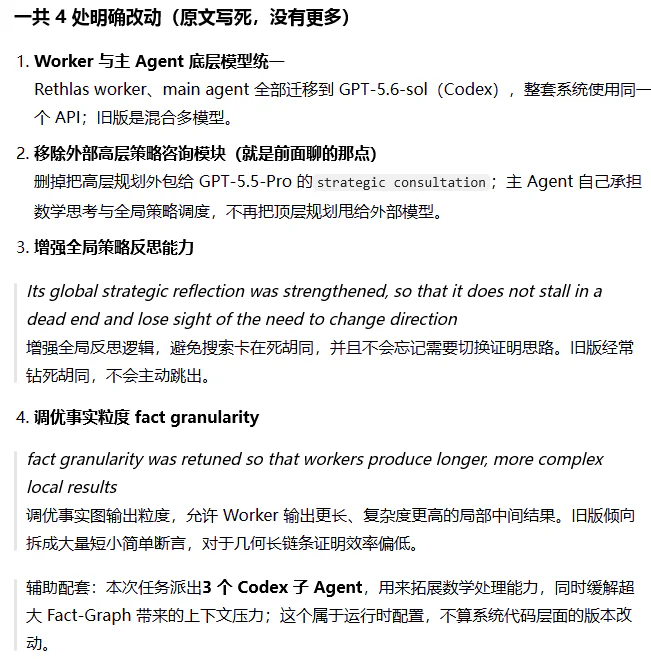
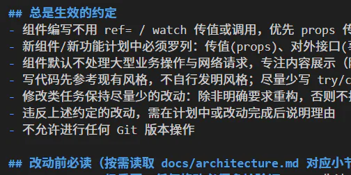

主帖热评与精选回复
本篇作用：1-2 楼是文章本体，而 98 的讨论价值有一半在回复里。楼主在回帖中做了大量对自己论点的补充、限定和修正，其中有些内容比正文更清楚。此处按"热评 → 楼主回应 → 其他精选"编排。
数据：全帖 143 回复；热评按点赞排序，抓取于 2026-09-18。所有回复原样搬运，表情代码保留。
一、热评六条（按热榜顺序）
| 楼层 | 用户 | 赞 | 内容 |
|---|---|---|---|
| 2 | XSYangtuo（楼主） | 166 | 即正文第二部分（"在这个时代，什么是真正的价值？"） |
| 85 | MrIqzd | 54 | 见下方全文 |
| 36 | JeffDean | 37 | 见下方全文 |
| 27 | 惊扰晨曦 | 13 | 见下方全文 |
| 66 | SimonSun | 10 | 见下方全文 |
| 55 | 代序 | 6 | 反驳"你这篇文章不会就是ai生成的吧"："已经完全丧失阅读能力了吗[tb01]" |
85 楼 · MrIqzd：一个"AI 依赖症"的五段自述（54 赞）
分享一下我的体验吧
- 首先是25年，特别是上半年年初，deepseek r3开源。那个时候还忙着写论文，gpt也在用，给我感觉也就这样，写出的代码bug多多，我把它当作 文字润色 的工具，大论文自己写完给它修改表述。
- 毕业之后，因为不写代码，最多也就看看进展，用的也不多，最多让它帮我润色润色已经写好的文字。从2025.6-2026.6这一年，没写代码，对于vibe coding因为不碰，只知道这个玩意开始"牛"起来了
- 改变来自今年六月，上面组织集中攻关，被迫重新拿起代码，刚开始还是"古法"编程，后面因为时间太紧急，准备结合claude code，刚开始还会看看代码，后面就直接不看， "yes"工程师 了，因为写的代码太复杂。
- 在集中攻关的时候，开始是代码，环境还是会自己配的。到后面就直接，"帮我安装geopandas"一句话命令。甚至我感觉我像一个 命令巨婴 。
- 现在各家开始卷，豆包工作、Trae、chatgpt客户端、workbuddy、claude code三端。卷模型后开始卷集成、卷平台。 乱花渐欲迷人眼
现在看到lz的帖子，我在想，在大模型时代，人的优势是什么？只能从我有限的工作经历中谈谈我的想法：
- 人要有自己的想法。当你不会做的时候，可以问大模型框架，可以让它给你提供思路，但是不能一味顺着它的思路，这样只会生产自己都不知道的垃圾。自己的思路怎么来，就是要平常的积累， 人本身的能力和创造。
- vibe coding能达到功能效果，冗余逻辑、缺乏复用和性能考量，且常采用"打补丁"的方式修复 bug，导致代码扩展性差，越往后越"改不动"。我自己都不想去看这堆屎山。
- 大模型终究只是工具，但是是有效的工具。未来很可能不是"一个人有多强"，而是 "一个人 + AI系统，能够形成多大的有效产能？ 珍妮机是工业革命"机器代替手工"，大模型是ai时代"智能改变认知"， 工业时代，人从"提供力量"转向"控制机器"；信息时代，人从"记忆信息"转向"使用信息"；AI时代，人最终可能从"生产答案"转向"定义问题、选择目标、做出判断并承担责任"。
术语注释："yes"工程师＝对 AI 提出的一切改动一律点确认、不再阅读代码的人；命令巨婴＝连环境配置都交给 AI、只会下命令的状态；"卷模型后开始卷集成、卷平台"指各家竞争从模型能力转向产品形态。
【AI 整理者注】：这条回复的价值在于，它与正文形成互证——楼主说的"放权是渐进且不可逆的"，在一个从"人工润色"走到"命令巨婴"只用了一年的人身上得到了完整复现。
36 楼 · JeffDean：用一句古文收尾（37 赞）
君子性非异也，善假于物也，ai同样也逃不出物的范围
ai时代，多读老祖宗的书，少看ai slop和社交媒体，焦虑能少大半。
（"君子生非异也，善假于物也"出自《荀子·劝学》。这条回复下面，有用户"洛天一"在 81 楼惊叹"我去JD"——说明 JeffDean 是站内有一定知名度的 ID。）
27 楼 · 惊扰晨曦：把"性格"问题一句话说透（13 赞）
好文bd，可惜今天没风评了，就试着送lz十大吧。最感觉深刻的就是对性格的阐述，目前的ai是统计学上的最大概率，而每一个人不过是概率的一个分母，ai能做到中庸的优秀，但是永远越发展越没有自己的性格。人性的魅力在此显露无疑[ac08]
66 楼 · SimonSun：接手别人的项目时，AI 的短板暴露（10 赞）
用ai在一个完全由自己从头开始去做的项目里面开发，很方便，我能立刻指出他写的代码哪里不足，ai也会立刻根据我说的改正，但接手别人的项目的时候，问题就很明显了，ai写的能跑，但我不知道他写的哪里不足，哪里不符合需求，完全没有办法指导ai修复问题
二、楼主的回应（按主题整理）
楼主在回帖中对自己的论点做了不少限定，这些限定对理解文章很重要——他不主张"AI 不行"，而是主张"人的部分被低估了"。
关于"十大"与写作动机
32 楼（回 27 楼）：十大是不太可能的，没那么多人愿意看长文[ac01]感谢肯定。其实是在这个大家都在讨论技术和能力的环境里面，我试图把一些人文主义的内容带回到ai的讨论中（在ai爆发之前，这些讨论才是主流），奈何文笔尚弱，可能结论也尚不准确，但是想要提供一种思考方式吧。
（随后 38 楼"十大通知书"、46 楼"并非，已经十大了"——帖子确实上了十大。）
关于"要不要让 AI 总结摘要"
59 楼（回 37 楼 Hayden：要不 ai 总结个摘要和目录加上？）：抱歉，事实上是想表达的内容太多了，想了很多办法串起来，最后都不太成功[ac01]然后AI总结的话我觉得没有表达出我想表达的意思，所以就没做。
（AI 整理者注：正文"观前提醒"里也说了"本文很长"。全帖共 143 回复，确实有读者反映抓不住主线——这个缺陷后来由读者自行消化，反而成了讨论的一部分。）
关于"我的辅助到底有没有价值"——菲奖帖的后续交锋
有人（28 楼 climb）提出反例：Y-T-D 猜想的反例，Danus agent 也能独立完成。楼主的回应：
31 楼：感觉Danus更接近于一种路径搜索的强大工具（根据文中的表述来看），解决的问题也已经有了适合的工具集，只是要在已有的工具集里面找到正确的。这就好像一般不会认为刷试管是科研的核心内容一样[ac01] 但是怎么说呢，确实有一定的独立性……
然后关于YTD，这个不是Danus论文原文提到的独立解决的问题，是另外一篇独立论文，我看了一下，其实也不能算是一个agent直接拿过来即用可以解决问题。首先是人在几个ai辅助下完成了工作，然后用他们改进后的Danus进行独立检验。（而且这个Danus又被手动调整了，你总不能为了一个问题每次都改一改agent吧？那不还是人在和ai协作吗，而且文中没有把一些细节调整讲明白，到底有多独立算独立？）
但是怎么说也是一种进步，最早ai只能做那种单项反例的纠察，现在可以做全称反例的纠察了，说不定未来会越走越远吧

关于"资源分配会加剧人的差距"
23 楼（回 22 楼五月晴：普通人当不了 A\ 的研究员，拿不到无限量 token，未来赢者通吃）：感谢，这个角度也挺好的，相当于因果关系反过来了[ac01]也就是说那个例子中，我不能证明一定要数学家才能做这件事，但我能说当前的论据还不能证明普通人也能做，所以有营销成分在
关于 AI 协作实践（对 SimonSun 的两轮往返）
67 楼：嗯，98的开发有时候也会遇到类似的问题，关于前者你提到的多人协作的问题，可以尝试用Claude.md之类的方式进行规范……

……然后第二个关于不知道ai到底哪里不足哪里不符合需求，最好多用plan &act 我现在基本上都默认要plan &act，会要求很详细的plan，感觉把控能力会提高。
我的个人想法hh，我用ai还是比较保守的，因为我确实老程序员了，经常出现的情况是有很多小改动的话，ai写的不如我快，也不如我质量高
80 楼（回 SimonSun："在一个不太了解的项目里 plan 和直接写代码区别不大"）：嗯plan还是有区别的对我来说，因为一般来说，ai的plan会在我这里被我反复reject好几次才会进入执行。然后关于重复造轮子，使用一些ai的规范是有较好的避免的可能的，类似于代码地图吧，让ai对过多的增量代码产生厌恶，它自然就会去想办法复用了
关于"要不要写、怕不怕写得不完美"（与 L2006u 的两轮往返）
97 楼 L2006u：感觉lz很愿意写和发表自己的思考。有时候我自己也有点思考，想分享，但临到头又觉得没有意义……就像实践前的半成品一般让我不安。lz会有这种焦虑吗？在发表前一刻想的是什么呢？
101 楼（楼主）：其实非常有类似的焦虑。我一开始的想法是十分模糊不清的，但是好在我身边有很多可以一起讨论的朋友，而且我一直在接收最新的资讯，最后真理越辩越明，想法就清晰了。
然后关于表达的意义。有时候你就把这个当成一个记录就好了，不必追求完美，你就想着未来你会感谢当时的记录就挺好的[tb22]而且这种表达追求一个时效性，假如一直拖着，可能就再也没机会写下了……总之人生无常，宁愿早些写下记录，不留遗憾。我最早也有点完美主义，然后一直憋不出来，后来我决定先写，就算是草稿也先落笔成文，可以反复改嘛，总之有人来问我我肯定是鼓励表达的。
（可以像我一样搞个一路楼，日常有想法就记录下来[ac01]）
关于"AI 与教育制度"
90 楼（回 86 楼水野的悲观论）：感觉在这个进程之前，学校的教育系统已经开始受到很大的冲击了。我们的教育系统还没有给ai准备足够好的制度。我记得研讨会上有一个观点挺有意思：最会用ai也最了解ai的人，很可能是工作繁重的硕博生以及部分本科生而不是对ai很关注的那些管理层……很多老师对ai的理解也只是徒有其表……本质上是因为需求驱动的。所以制定制度的人可能反而不了解ai。
然后关于taste，我感觉应该每个人都有属于自己的taste，只是因为被现在的标准化体系（比如考试）给束缚了，已经不习惯于自由地表达，从而退化了。所以如果未来要进步，还是要以解放人的表达为目的吧。
关于"技术迭代速度 vs 人的代际更替"
99 楼（回 96 楼尘弥磕盐对失业与社会动荡的担忧）：从历史的角度看，人类科技的进步（或者说工具的进步）越来越快，现在已经快要达到一个critical point了，那就是工具的进步速度已经快要赶超人的代际更替速度了。
从前，人可以靠自己年轻时学习的知识过一辈子，比如铁匠，甚至可以形成世家……后来科技发展的越来越快……人可能干一件工作到五六十岁，这份工作就过时了，比如电气时代的一些工程师，干一辈子，到老了的时候正好进入下一个技术周期。迭代时间一直在缩短，互联网时代就很明显。比如说所谓的程序员35岁斩杀线就有类似的意味……到现在，ai技术有非常明显的年轻化趋势，十几二十岁的人最会用ai，也成为了ai的主要使用者。如果不持续学习，知识很容易就过时了。但是人学习能力最强的也就一段时间吧...
三、其他精选回复
38 楼 · zjjncsn（459 字）
十大通知书[cc9814]
（对楼主"十大是不太可能的"的短促反驳，随后被验证。这类"打脸式"互动是 98 的典型乐趣。）
92 楼 · 你禾：AI 也在把人"教育"成平庸的优秀
说ai在创造平庸的优秀产品的时候，我在想，我好像也一直在被教育成为一个平庸的优秀的人。就是只要按部就班的完成具体的任务，达到指标就可以，不需要有自己的需求爱好审美等等。
不过我觉得ai是有利于我们发掘自己的审美爱好的。比如说想要做一个小网站，在以往的时候我会先考虑要去学习相关的语言，然后才能搭建好。但是现在的话你只要给AI说这个需求，他就能给你做一个相对能看的例子，然后如果你真的发现自己感兴趣的话，你自然会去精进相关的技术，如果你不是很感兴趣的话，也就没有必要为了做提前的准备，而浪费太多时间。也不会因为一想到这样的门槛，就立刻放弃掉尝试。
简单来说，一些特定领域的试错成本降低了。
86 楼 · 水野：不是所有人都有 Taste
感谢lz 其实我真正担忧的恰好是大部分人 可以称他们为没有taste吧或者没有自己独特的价值 就像工业时代把大部分生产线上的劳动力变成了可以被剥夺剩余价值的工具，ai也是一种机器。 ai的存在其实对人提出了更高的要求才能不被异化，是好事也是坏事。好在给能力强的人提供了更高的平台与效率，同时也淘汰了一批不能适应ai而进化的人？毕竟就像工厂主一样能超越机器的人永远都是少数人，不过我不知道ai会不会让我们的社会结构发生很大的变动，还只是加固这种社会阶层的工具。 但这个过程的发生是无法制止的，它背后的资本只会让加速的进程不断得到正反馈，我也不知道这个进程的结局会怎么样。
96 楼 · 尘弥磕盐：短期看失业，长期看"工具替人做决定"
好文bd，获得了许多很有价值的观点 我在AI对社会的冲击方面也有一点看法，但依然是偏悲观的。我主要从短期和长期两个方面说。 短期来看，就像lz说的，AI放大了人的价值，但这里的"价值"主要还是人类创造力的体现，而长期以来从事创造性工作的人（比如研发、比如艺术）都是少数，大部分人依然是依靠重复劳动（包括体力和脑力的劳动）来谋生的。AI淘汰的正是这部分人。……虽然新质产能淘汰老旧低端产能是客观规律，但由此引发的失业潮中的失业人员如果不能妥善安置，随之而来的社会动荡也是十分危险的。 长期方面来看，以往的科技革命都是工具使人类更强大，工具本身无法决定自己的用途。但现在的AI已经逐渐开始代替人类做决定了，而这时AI那种"平庸的优秀"反而是最可怕的，因为它足够理性、无情。有史以来第一次，人类的工具可能比人类更加了解自己，它会继续做我们的工具，还是我们会成为它的工具？（部分观点引用了《人类简史》出版10周年版本序言，最近正好在看）
114 楼 · Hestia_Z：从"肉体"角度论证不可替代
感觉分析的非常透彻了[ac32]人的性格、情绪波动、触动与启发是ai所不具备的，这类依赖神经结构、化学物质波动的部分是人最大的、不可替代的部分。ai虽然强，但是它没有肉体（我认为相当长的一段时间都不会有，从信息论的角度来说，人能创造出来的东西，其包含的信息量不会超过人所蕴含的信息量），所以我认为ai完全替代人类的事情不太可能发生。但是重要之处就在于，要找到自己究竟是谁。根基立住了，ai才能把我们的枝叶放大[em06]
115 楼 · 西湖陈皮鱼："预制菜"比喻
严肃看完了 非常感谢lz，在26年下半年还能看到这么有insight，有逻辑，有人味的帖子。读起来引人深思，心旷神怡。 现在想来可能还是人的思维方式和硅基拟合出来的方式不太一致吧。（这句话用ai的语言来说可能就是：这不是一篇浮华具有AI味的"人机"文章，而是具有洞见，深入思考的"人味"文章 hhhh） 感谢lz的分享。读完一个感受就是AI就像是一个高超的预制菜厨师，提供更好的食材和更好的做法也还是和有锅气和烟火气的人类作品有所区别。尽管锅气的食物炒出来也口味各异。 另一个感受就是真的需要好好的学习和吸收更多的知识提升自己，才能更好的掌握和用好AI。 谢谢～[ac08]
118 楼 · 回眸98：一个即将毕业的硕士的共鸣
文章非常地道，自己现在也是ai的重度使用者，在ai的时代，感觉每个人都被裹挟着走。焦虑如影随形。平庸的优秀，这个词，个人觉得用的，非常准确。在如今社会大环境逐渐下行的过程中，好的工作的定义也再飞速变化，但社会和个人对于工作的期望是没有变的。由此，我自己也在这场快速社会变革中，渐渐地迷失了方向。相比于10几年前经济上行期的时候，"好的工作"似乎越来越远，10几年前，普通本科生都能找到跟现如今985甚至c9才能进的"大厂"，并且10几年前的薪资待遇与如今的薪资待遇差别也不大。 同一个岗位，学历上涨，能力上涨，但薪资却在踏步。 在下行的大环境中，平庸的优秀，（去一个大厂，卷卷自己 卷卷别人。）似乎变成了每个人都向往的生活方式。 每个机会来临时，都在权衡利弊，生怕在这个下行的大环境里，一搞不好万劫不复。但权衡后的决定呢？我们是否有勇气不再回头看，无悔地做出自己的选择呢？这个选择也许就是文章里提到的品味。 当我们将自己的问题问给ai时，ai总是会给出那般全面的考量，也就是文中提到的"平庸的优秀"解。 而破局之法则只能追问内心，去找到自己的taste. （身在迷茫的中的即将毕业的航院小硕，读后有感）
14 / 16 楼 · 洛天一：AI 帮你入门一个领域能到 99%，但剩下 1% 靠不住
14 楼：私以为ai目前在引导新人快速熟悉入门一个领域这方面已经做到99%的完满 至于剩下1%的精进目前的ai还不够格[ac05] 说白就是外行人拿来跨界可以 但你没法单纯指望这个东西来建立老本行的核心竞争力
16 楼（回应 FuGod 的"精进，1%，听上去有点严苛"）：不是要精进到所有人前1%的意思，我指的是把一个小白从外行成长为业内资深人士的过程分成两个阶段，前面99%的入门和最后1%的精进
补充：楼主给出的"97% 阅读困难"式的自我修正
全帖的结构性缺陷之一是没有目录、没有摘要（37 楼层主 Hayden 提过，59 楼楼主 XSYangtuo 解释了为什么不做）。但读者用别的方式解决了：有人在回帖中代做总结，有人只挑自己关心的段落回。真正引发长回复的是四个具体话题：价值定义（2 楼）、开发协作（66–80 楼）、Taste（86–92 楼）、社会冲击（96–118 楼）。换句话说，这篇"没有性格"的批评者，自己也在被读者按各自的口味切开来读。
四、这个帖子作为一个"论坛现象"
| 现象 | 数据 |
|---|---|
| 点赞最高的两条回复 | 2 楼（楼主自己的第二部分，166 赞）、85 楼（MrIqzd 的个人史，54 赞） |
| 风评（加分）记录 | 1 楼获 33 次加风评，理由关键词集中在"优质作品，受益良多""有理有据，非常求是""有用资源，感谢分享"，其中用户"黎辉"连续加了 3 次"十大米" |
| 热度走向 | 09-01 深夜发布 → 09-02 冲上十大 → 讨论持续到 09-12，累计 143 回复 / 11,788 点击 |
| 收藏 | 510 次收藏（同一时期该版其他长文的收藏量普遍在 200 上下，见 Fable 帖 217、讲义帖 207），说明有不少人把它当"留档阅读"而非"即时消费" |
【AI 整理者注】：与正文对照最有趣的一点是——这篇文章能上十大、能被 510 人收藏，本身就部分否证了它的悲观基调。楼主担心"平庸的优秀"会淹没一切，但一篇 1.1 万字、没有目录、没有人机糖精味的文章，在一堆 AI 生成的"资源帖"之间仍然杀出了重围。这一点楼主本人在后记里没有说，但数据替他说了。